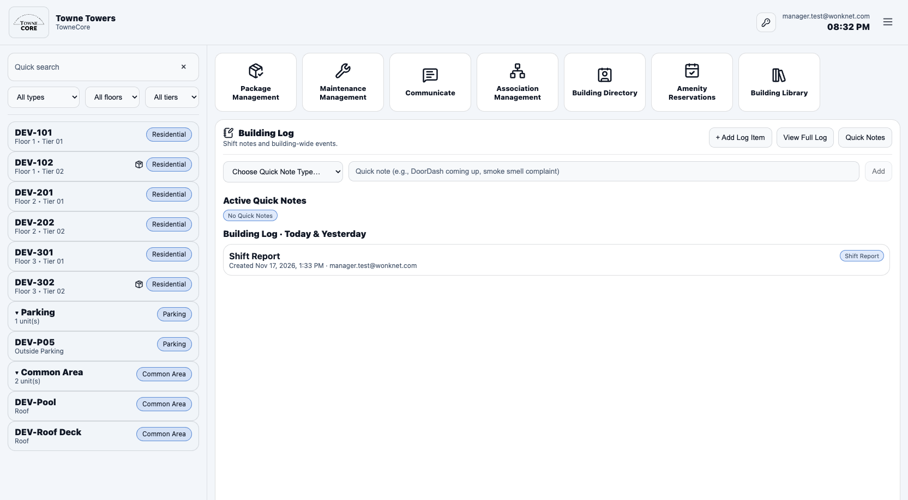
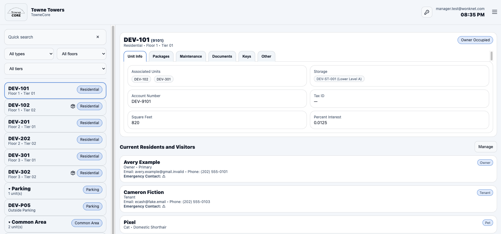
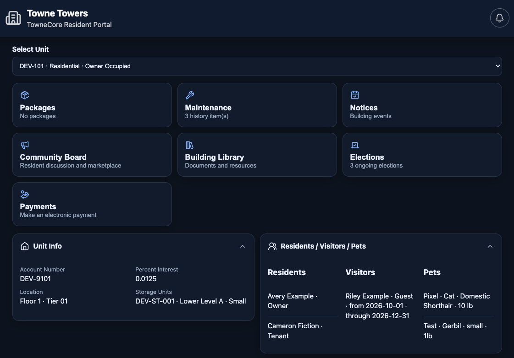
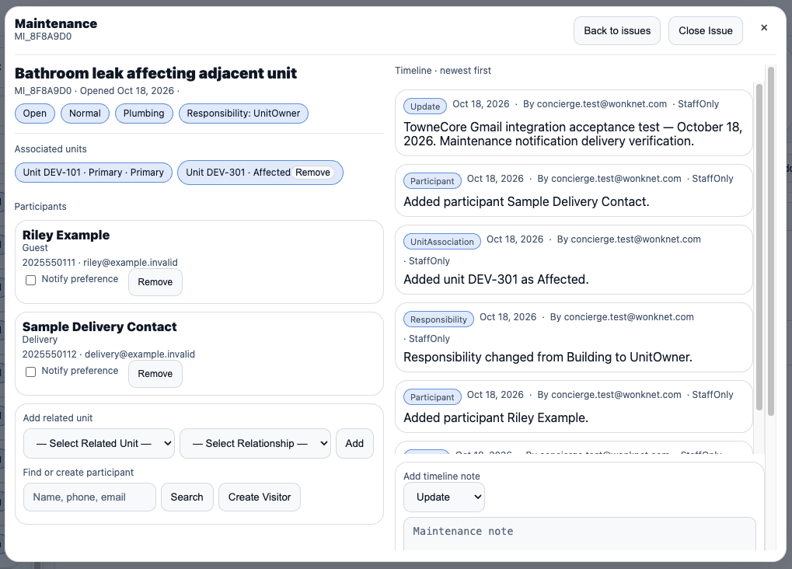
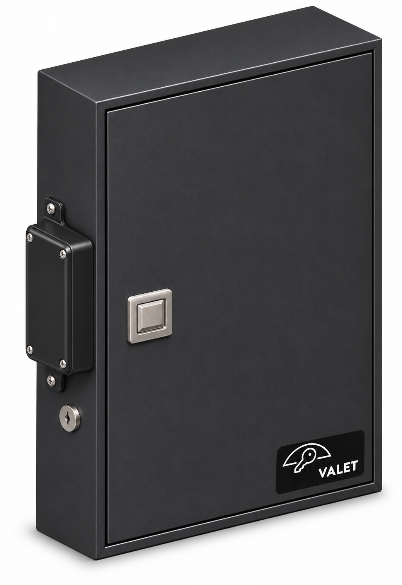
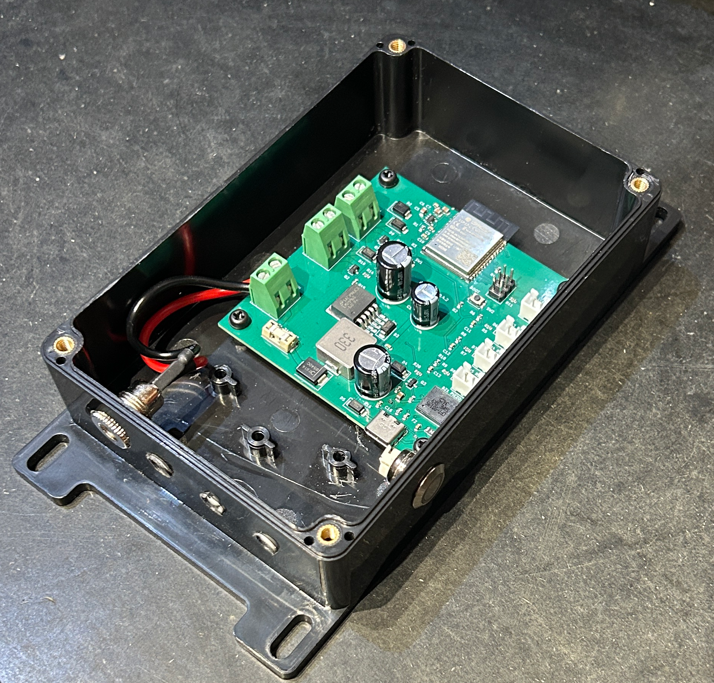

Spend on the building, not another license.
Use Google Workspace and Cloud infrastructure the association controls, conventional hardware where possible, and freely available source code.
Open-source condominium operations
Created by condominium leadership. Developed with AI assistance. Designed for economy, efficiency, and security—not another subscription business.

The origin, without the sales pitch
We wanted our own condominium to operate better—and we thought the alternatives cost too much for what they delivered.
TowneCore grew out of years of serving on a condominium board and watching the daily work of onsite staff: packages, courtesy keys, contractor access, maintenance problems, resident notices, and the handoff between shifts.
We believed a system organized around actual units, people, and responsibilities could do better than a stack of disconnected transactions and generic event records.
AI-assisted development helped make an ambitious, carefully directed project economically possible. The goal was never to sell access to the result. It was to build the system we wanted to use, publish the code, and let other associations benefit and improve it.
No venture-backed startup. No hidden premium tier. No proprietary data hostage situation. Just a purpose-built open-source project for buildings like ours.
Use Google Workspace and Cloud infrastructure the association controls, conventional hardware where possible, and freely available source code.
Keep people, units, keys, issues, and documents connected so staff spend less time hunting and more time helping residents.
Use established authentication, server-enforced permissions, transactional records, and cryptographically authorized cabinet controls.
One coherent operating system
TowneCore is designed to support onsite employees—not replace them with a queue of resident self-service tickets.
Receive and scan deliveries, notify residents, record pickup and signatures, and see outstanding packages at a glance.
Persistent key inventory, authorized checkouts, barcode verification, signatures, and return records—with or without KeyValet.
A single problem can involve several units, vendors, and residents. Keep the actual issue and its communications connected.
Building Log, unit histories, Quick Notes, shift reports, and TowneWiki preserve the knowledge people generate each day.
Targeted announcements, package visibility, documents, reservations, elections, and community conversations by email.
Residential units, parking, common areas, storage, amenities, and reservable resources in one consistent property model.
A closer look
Staff and resident experiences organized around the units, people, and everyday responsibilities of a staffed condominium.



More than a digital logbook
A unit isn’t merely an address that received 900 packages over the last decade. It’s a real place with owners, residents, maintenance history, documents, keys, and changing relationships.
TowneCore keeps those relationships available in context. An owner with multiple units is one person. A leak affecting three apartments is one coordinated issue. A key has a current status and a custody history.

Meet KeyValet
KeyValet takes TowneCore’s structured key-custody workflow into the physical world, turning inexpensive conventional metal key cabinets into electronically controlled or monitored storage.
KeyValet is optional. TowneCore’s software-based key inventory and custody workflows stand on their own. Controller, firmware, and hardware designs are intended for open-source release.

Security is an architectural choice
AI helped make development economical. Security comes from explicit controls, established services, and verifiable behavior—not from claiming that AI makes software secure.
Authentication through established Google identity infrastructure rather than a separate TowneCore password store.
Roles and capabilities control what staff and residents may access; unit relationships determine appropriate resident visibility.
KeyValet validates signed commands at the controller, with replay protections and durable hardware event records.
The association administers its Google organization and cloud environment instead of relying on a proprietary vendor to own its records.
Open source and association control support scrutiny and independence; neither substitutes for sound deployment, updates, access management, or security review.
Who TowneCore is for
A building can deploy TowneCore on its own—or work with its existing management company and trusted IT provider. The application doesn’t need to be owned by either provider.
For condominium boards
Choose your management company for its people and service. Don’t surrender the building’s digital identity, documents, and operating history with the contract.
For regional management companies
Offer a proven open-source operational platform as part of your service. A trusted IT vendor can handle a repeatable, one-time deployment while staff get a better daily tool.
No catch / The actual economics
The code costs nothing. Running it in your own Google environment and hiring someone to help set it up can cost money. Those are different things.
Illustrative commercial SaaS
$5,500 / year
Example annual license amount from an existing building’s experience—not a general vendor price quote.
Illustrative TowneCore scenario
$0 software license
Example: $500/year in incremental Google infrastructure and a one-time $3,500 installation and migration arranged with an IT professional.
You don’t need to transplant a decade of package events simply because an old vendor stored them.
Import people and visitors. Normalize existing records. Verify relationships. Rebuild current owners, occupants, and authorizations. Reconcile active operations. Bring forward current keys, packages, and live issues. Keep historical exports. Save legacy records in the association’s Google Drive.
Illustrative figures, not a cost guarantee. Workspace seats, cloud usage, data volumes, and professional help vary by building. Source code remains free even if a third party charges for installation or service.
An open-source project, not a funnel
A better user experience, a better-run building, and seeing other associations benefit are the point. TowneCore is intended to become a community-maintained project as adoption grows—not a subscription product in disguise.
The more buildings, concierge, and community managers use it, the more people have a reason to document, fix, and improve the shared code. That’s the community we’re hoping to build.
GitHub project links and license details will be added at public releaseThere is no paid TowneCore edition or required software subscription. Your association pays for its own infrastructure and any professional installation help it chooses.
No. TowneCore is owned and operated by the association. Existing management companies and concierge staff can use it with appropriate permissions.
No. TowneCore addresses building operations. Financial accounting remains with the association’s management or accounting provider.
No. AI assisted the development process. TowneCore supports human staff, conventional workflows, and explicit permissions.
No. Key inventory and custody work without electronic cabinets. KeyValet is an optional extension for physical cabinet control and monitoring.
That’s the intended model. Documented installation, configuration, and migration should be repeatable by a capable IT professional rather than requiring a proprietary vendor.